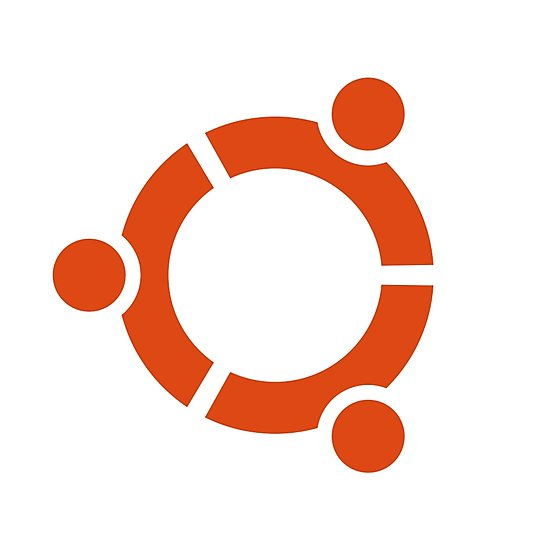

redhat
redhat
Red Hat Enterprise Linux version 7.5 (HVM), EBS General Purpose (SSD) Volume Type
ubuntu
Ubuntu Server 18.04 LTS (HVM),EBS General Purpose (SSD) Volume Type.
 suse linux
suse linux
SUSE Linux Enterprise Server 15 (HVM), EBS General Purpose (SSD) Volume Type. Public Cloud, Advanced Systems Management, Web and Scripting,
and Legacy modules enabled.
windows 2019
Microsoft Windows 2019 Datacenter edition.